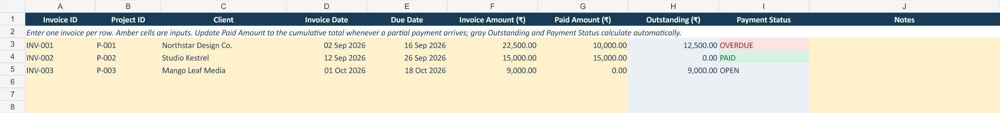
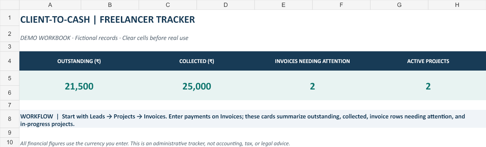

Record enquiries, proposal status and the next follow-up date.
EXCEL TEMPLATE FOR FREELANCERS
Keep leads, projects, invoices and payments in one clear workflow.
Client-to-Cash is a practical Excel workbook for independent freelancers and consultants who want a simple record from enquiry through to payment.
View the workbook on GumroadUS$11.99 · Includes a blank tracker and a fictional demo workbook.
THE WORKFLOW
Lead → Project → Invoice → Payment → Overview
Track agreed fee, deadline, project status and hours logged.
Enter one invoice per row, its due date and payments received.
See collected money, outstanding balance and invoices needing attention.
DESIGNED FOR REAL FOLLOW-UPS
Know what still needs attention.
Keep the original invoice total when a client makes a partial payment. Update Paid Amount; the workbook calculates the outstanding balance and payment status. If the due date has passed while a balance remains, the invoice is flagged as overdue.


WHAT IS INCLUDED
One blank workbook, one safe demo.
- Blank Excel tracker for your records
- Separate fictional demo workbook
- Visual Start Here guide inside both files
- Protected formula cells and dropdown statuses
This is an Excel record-keeping template. It does not create legal invoices, calculate tax or GST, send reminders, connect to a bank or replace accounting software.